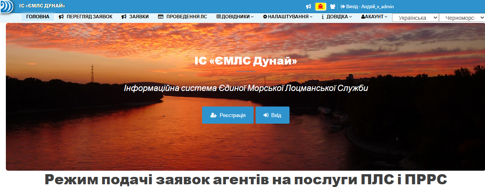

Введение¶
Добро пожаловать в документацию ИС «ЕМЛС Дунай» • «ПЛС Черноморск»
📖 История развития ИС¶
2023 г. Старт разработки • Постановка ТЗ • Формализация бизнес логики • Внедрение
2023 г. Постановка ТЗ • Бизнес логика • Внедрение¶
Февраль 2023 г.¶
- Устная постановка задачи
- Предложения разработать сайт для ИС ЕМЛС Дунай по аналогии ИС VTMIS Odessa для подачи заявок агентов.
Март 2023 г.¶
- Разработка ТЗ (21 стр.) 18 пунктов.
-
Обозначены основные требования:
- Должен быть прототипом существующей ИС VTMIS Odessa
- Журнал заявок агентов
- Справочники судов, агентов, портов, причалов
- Журнал квитанций ЛС
- Таймшит рабочего времени ЛС
-
В ТЗ подробно расписаны функции со скриншотами по аналогии как сделано в ИС VTMIS Odessa
Апрель 2023 г.¶
- danube.pp.ua - создан домен
-
Разработан функционал регистрации на сайте с восстановлением паролей, активацией пользователей
-
Разграничение прав доступа пользователей на сайте
- Справочник пользователей
- Справочник сотрудников
- Отработка алгоритмов удаления и деактивации пользователей с проверкой целостности базы данных
- Создание подробной видео инструкции пользователя на сайте
Май 2023 г.¶
- Справочник агентов
- Справочник городов
- Привязка пользователей сайта к агентским компаниям
- Отработка алгоритмов активации, деактивации и удаления пользователей и агентов с учетом наличия связанных таблиц в базе данных. Запрет на удаления пользователя при наличии связки с агентом или группой
-
Справочник стран
-
На форме ввода привязка города к странам - взаимосвязанные списки
Июнь 2023 г.¶
- Справочник ПРДС
- Справочник портопунктов - привязка к ПРДС
- Справочник причалов - привязка к портам - описание причалов
- Справочник Типов судов
- Справочник стран
- Справочник Типов сертификатов
- Справочник Судов - 10360 загружено из БД Планшет
- Суда - дубликаты
- Суда - Счетчики новых, дубликатов и с вопросами
- Ввод нового и редактирование
- Валидация ввода и проверка на дубликаты
- При вводе и удалении судна проверки на сохранение целостности базы данных
- Уведомления о регистрации новых пользователей
Июль 2023 г.¶
- Создан новый режим: Журнал Заявок Агентов ЖЗА
- Режим администратора
- PDF - форма - Delta-pilot
- PDF - форма - DAVID - наказ Украины № 433 от 2020-07-31
- Редактирование/Отправка/Загрузка - Загрузка документов
- Статус заявки
- Список агентов
- Откуда - Куда. Дата откуда с уточнением
- Тип проводки
- Признак подтверждения заявки диспетчером ЛС
- Примечания диспетчера ЛС
- Назначение Лоцмана ПЛС
- Примечания агента
- Характеристики и параметры основного судна
- Характеристики и параметры второстепенных судов (караван/состав)
- Кабинет агента - каждый агент видит только свои заявки
- Кабинет агента - каждый агент видит только свои заявки
- Письмо с PDF заявкой
- Кабинет Диспетчера ЛС
- Глобальный счетчик-ссылка новых действующих заявок
Август 2023 г.¶
- Первая версия режима «Распределение лоцманов» - встреча с пользователями!
- Попытка опытной эксплуатации
- Сортировка по портам от устья реки Дунай
- Обязательные ПЯТЬ портов: Вилково,Килия,Измаил,Чатал,Рени
- Счетчики заявок в каждом портопункте
- Автоматическая подсветка лоцмана во всех заявках при наведении
- Список агентов
- Список перетаскиваемых лоцманов - Блок 2
- Инструмент для поиска лоцмана в блоке 2
- Инструмент для поиска лоцмана во всей таблице распределения лоцманов
Сентябрь 2023 г.¶
- Распределение лоцманов - это задача диспетчеризации заявок - версия № 2
- Концепция и матмодель системы диспетчеризации заявок
- Графики работ лоцманов Измаил - 2 смены 10 через 10 ► Рени - 3 смены 3 через 6
- Автоматическое отображение текущих рабочих вахт и период дат с какой по какую дату
- Отпуска, больничные, состав вахт, лоцманы для перемещения
- Разбор конфликтных заявок
- В ночное время - в конце вахты - желтый шрифт на темно синем фоне
- Командировка в Измаил
-
Подготовка ТЗ для переработки второй версии распределения лоцманов
-
ТЗ для режима ввода лоцманских квитанций
- Обсудили необходимость ввода заявок диспетчером ЛС
- Обработка плана швартовых операций - привязка к ЖЗА и справочнику судов.
Октябрь 2023 г.¶
- Ввод лоцманских квитанций - версия 1.0
- Авторизация лоцмана
- Два фильтра: Мои заявки и Мои кв-ии
- Состав каравана
- Редактирование квитанции
- Состав данных для ввода квитанции
- Список работ для лоцмана
- Ввод НОВОЙ заявки
- Взаимодействие с диспетчером ЛС
- Уточнение времени и статус заявки
Ноябрь 2023 г.¶
- Ввод заявок диспетчером ЛС - версия 1.0
- Реализация по аналогии как вводит агент
- Работа со справочником судов - поддержание целостности данных
- Состав каравана
- Работа с фильтрами в таблице ЖЗА
- Загрузка дополнительных документов к заявке
Декабрь 2023 г.¶
- Проводка судов методом лидирования - версия 1.0
- Поиск попутчиков
- Раскраска LM и LS
- Как отменить лидирование
- Работа с лоцманскими квитанциями и лоцманами
- Замена лидирующего судна
- Правила удаления квитанций
- Фильтры для лидирования
- Фильтр для контроля пропущенных квитанций
2024 г. Финишиные доработки кабинета Лоцмана ПЛС • Статотчеты • Справочник судов • Уровни Дуная • Телеграм-бот
2024 г. Кабинет Лоцмана ПЛС • Статотчеты • СПР • Уровни Дуная • Телеграм-бот¶
Январь 2024 г.¶
- Разработка информационной формы по судну в режиме заявок агентов и в списке квитанций ЛС - версия 1.0
- Состав данных для диспетчеров, экономистов и лоцманов отличается от агентов
- Разработка макетов дизайна формы для утверждения с диспетчерами ЛС
Февраль 2024 г.¶
- Проводки ЛС Таймшит Форма ввода версия 3.0
- Даты СТАРТА и ФИНИША
- Даты из предыдущей и следующей проводок
- Тривалість відпочинку
- Обработка ошибок ввода и информирование пользователя с предупреждениями и запретами
Март 2024 г.¶
- Уточнение времени в заявке диспетчером и агентом
- Режим Пользователи - исправлен фильтр
- ЖЗА - исправлены фильтры и списки лоцманов
- Распределение лоцманов - перестраиваем дизайн
- Загрузка фото проводок ЛС
- ЖЗА - фильтры для диспетчеров
- Распределение лоцманов - при перетаскивании меняем смены и больничный
- ЖЗА - для лоцманов ЛС свой дизайн и отображение режима
- ЖЗА - диспетчеры могут редактировать откуда - куда в заявке
- Проводки ЛС - история операций
Апрель 2024 г.¶
- Исправление ошибок при вводе новой проводки
- ЖЗА - новое меню с фильтрами
- Кабинет лоцмана - кнопки
-
Распределение лоцманов - перестраиваем дизайн
4.1. Счетчики, фильтры, фоны, цвета, отступы, сортировки лоцманов, судов и заявок и т.д.
4.2. Меняем логику работы со сменами - добавляем понятие временной смены при перетаскивании ломана не в свою смену
4.3. Отображение списка судов -
PDF форма заявки - обновление списка отображаемых данных
Май 2024 г.¶
- Справочник судов с привязкой к ЖЗА
- Инструмент для работы с ошибками ввода в заявках по данным судна
- В форме редактирования в справочнике судов разработан инструмент для быстрого корректирования данных судна по данным из заявки
Июнь 2024 г.¶
- Формирование статистических отчетов версия 1.0
- Загальна статистика по морським портам
- Кількість робіт Дунайській регіон
- Проводки ЛС - печатная форма выбранного списка
- Отработка обратной связи с экономистами при работе с заявками - исправление ошибок
- Добавлен признак кто создал заявку: агент, диспетчер или экономист
- Для каждой группы пользователей сделан свой вариант фильтров для режима Проводки ЛС
Июль 2024 г.¶
- Справочник судов. Парсинг регистров EQUASIS •Vessel Finder • версия.3.0
- В ЖЗА и в Проводках ЛС вывод предупреждения о несоответствии в данных по судну
- Расширенная форма редактирования судна с загрузкой данных из регистров, EQUASIS и Vessel Finder
- Убираем предупреждения при правильном вводе данных по судну
Август 2024 г.¶
-
Распределение лоцманов
1.1. Ввод и отображение уровней Дуная
1.2. Инфо-панель - убраны лишние данные -
Справочник судов - добавлены парсинги с семи сайтов регистров судов
- Справочник причалов - пересчет расстояния от устья
Сентябрь 2024 г.¶
-
Распределение лоцманов
1.1. Автоматическое распознавание уровней с сайта гидрометеорологической лаборатории Дуная
1.3. Теперь можно не вводить руками
1.2. Отображение графиков уровней -
Создание ЧАТ-БОТа для оповещения о появлении новых уровней и о новых БОНИ на сайте
2.1. Пересылка PDF файлов с уровнями и БОНИ по команде и автоматом
2.2. Активация бота, определение если участник покинул чат или отписался от рассылки
Октябрь 2024 г.¶
-
Уровни Дуная - исправление ошибок парсинга
1.1. Исправлено отображение в архиве уровней
1.2. Исправлены ошибки при регистрации -
Формула расчета миль - добавлена логика для Орловки
2.1. Исправлено формирование дистанции во всех отчетах, в колонтитулах фото проводок, в таблицах ЖЗА и Проводки ЛС
-
Изменился график смен в Рени - исправили алгоритм в распределении лоцманов
- Кабинет лоцмана - изменения в дизайне
- Справочник сотрудников - добавлено понятие подгруппы - переписан режим ввода и редактирования данных по сотруднику
Ноябрь 2024 г.¶
- Проводки ЛС. Форма загрузки документов. Добавлено формирование превьюшек для JPG
- Исправлены ошибки в коде
- Лимит по созданию заявок
- По умолчанию для всех 15 дней
- 30 - это лимит только для админов, диспетчеров и экономистов (и рени-порт)
2025 г. Переключение внимания на разработку по Большой Одессе для ПЛС Черноморска
2025 г. Дунай. Статотчеты. ПЛС Черноморск¶
Январь 2025 г.¶
-
Дунай. Режим Проводки ЛС
-
Отчеты в Excel
- Добавляем Катер доставив • Катер зняв в отчет
- Номер кв-ии для Рени разделяем пробелом от трех первых цифр и следующих
- Проводки ЛС - отчеты -Все поля - Журнал проводок
Февраль 2025 г.¶
- Отработка замечаний по квитанциям
- Разработка отчета по занятости лоцманов
- Отладка режима в Excel макросе
- Автоматическая генерация отчётов в отдельном режиме
Март 2025 г.¶
- Парсинг БОНИ и уровней по Дунаю. Сайт метеорологической абсерватории поменял структуру и названия публикуемых документов
Апрель 2025 г.¶
- Проводки ЛС - не грузилась фотка кв-ии
- ПЛС Черноморск
- Устная постановка ТЗ
- Задача минимум - репликация только Черноморских заявок из ИС VTMIS Odessa
Май 2025 г. ► ПЛС Черноморск¶
- Справочник сотрудников - ЛОЦМАНЫ ПЛС
- Принадлежность к регионам. Лоцманы работали на Дунае, теперь вернулись в Черноморск
- Должен быть общий справочник
- Репликация справочников из ИС VTMIS Odessa: Агенты, Буксиров, Статусов заявок, Грузов, Типов судов, Причалов
- Админы и некторые Диспетчеры могут иметь доступ сразу к нескольким регионам
- Разработка нового режима ЖЗА специально для ПЛС Черноморска
- Автоматическое создание судна в БД Дуная из ЖЗА ИC VTMIS Odessa
Май 2025 г. ► ЕМЛС Дунай¶
- График смен Измаил. С 2025-05-30 будет вместо 2-х смен три. 7 через 14
- Переписаны все режимы и справочники на сайте под новый график
Июнь 2025 г. ► ПЛС Черноморск¶
- Редактирование в таблице ЖЗА
- ФИЛЬТРЫ в верху таблицы ЖЗА
- Кнопки над таблицей ЖЗА
- Сложный комбинированный фильтр
- Отладка репликации из ИC VTMIS Odessa
- Назначение лоцмана в заявку
- Адаптация ЖЗА под требования в порту Черноморск в соответствии с форматом заявок в ИC VTMIS Odessa
- Разработка нового режима по вводу Проводок ЛС для ПЛС Черноморска
Июнь 2025 г. ► ЕМЛС Дунай¶
- Исправление ошибок в коде после переформатирования алгоритмов по новому графику смен в мае 2025г.
- Справочник судов - исправлена ошибка копирования названия судна из ЖЗА в СПР
- Распределение лоцманов - была ошибка при смене статуса на В ПРОВОДКЕ
- При сохранении проводки была ошибка
- Добавлено дополнительное поле комментариев в ЖЗА
- И выделена отдельная колонка с комментариями только для агентов
- Переформатирована таблица ЖЗА (порядок колонок)
- Статотчеты: Кількість робіт Дунайській регіон - исправлен алгоритм учета лоцманов по регионам
Июль 2025 г. ► ПЛС Черноморск¶
- Проводки ПЛС Черноморска - адаптация под использование в регионе Черноморск
- Весь функционал переформатирован и модернизирован
- Работа с печатным реестром квитанций
- Исправлена работа репликации из ИC VTMIS Odessa
- Выгрузка в Excel из режима Проводки ЛС (в том числе xls Отчет для Яни)
- Переключатель регионов - для админов и диспетчеров(не всех)
- Особенные фильтры для Черноморска в Проводках ЛС
- ЖЗА Черноморска - для Черноморских лоцманов добавлена логика при авторизации(открытии) на сайте
- Переформатирован дизайн мобильной версии для аккаунтов Лоцманов ЛС
- Черноморск - ПЕРЕГЛЯД ЗАЯВОК - создан НОВЫЙ режим
- Для портовых ПЛС ПЕРЕГЛЯД ЗАЯВОК переписан заново с учетом требований по портовым работам
- В ЖЗА Черноморска созданы свой набор быстрых фильтров
- Подготовка режимов на сайте для ввода в опытную эксплуатацию на ПЛС Черноморска
- Исправлены алгоритмы авторизации для диспетчеров(ст. смены)
- Адаптирован дизайн под различные девайсы (андроид, ноутбук, iOS)
- Добавлены все лоцманы и присвоены соответствующие смены, актуализированы контактные данные
- Проверена работа ссылок для отправки сообщений в WhatsApp
- ПЕРЕГЛЯД ЗАЯВОК - САМОназначение лоцманов - особенность портовых работ требует именно такую организацию процесса
- Добавлена возможность отправлять сообщение при перестановках в Перегляде заявок
- Добавлена отметка для привлечения внимания если лоцманы самостоятельно поменялись в заявке
- Разработан расширенный шаблон текста уведомления в WhatsApp с эмодзи и информацией о заявке и проводке
- Лоцманы должны сами менять статус на выполненная. Это можно сделать прямо в форме ввода проводки.
- В режиме
ЖЗА для ЛОЦМАНОВубраны верхние фильтры, т.к. лоцманы должны видеть и работать только со своими заявками. - В ПЕРЕГЛЯДЕ ЗАЯВОК добавлена кнопка-ссылка на ЖЗА возле каждого названия судна (справа). Открывается ЖЗА с фильтром по этой заявке.
- В режиме ПЕРЕГЛЯД ЗАЯВОК в андроиде перестало работать меню(гамбургер) - FIXED
Август 2025 г.¶
- Старт опытной экслуатации в ПЛС Черноморск
- Отработка замечаний
- В мобильной версии чтобы гамбургер не налазил на верхнуюю панель
- Передезайн логотипа(векторизация). Под различные браузеры, мессенджеры, девайсы
- Подключение лоцманов
- Актуализация справочника причалов и справочника буксиров
- ЖЗА ► Аккаунт ЛОЦМАНА ПЛС - таблица заявок открывается без правильно настроенных колонок
- Если сделан переход из ПЕРЕГЛЯДА ЗАЯВОК по кнопке ЖЗА, то переставали работать фильтры
- Перестройка элементов управления в ЖЗА для более компактного и функционального отображения
- Добавляем экономиста в Черноморск
- Для группы пользователей
экономистыоткрываем доступ к режимам ЖЗА и Проводки ЛС - Пофиксили баг при загрузке документов(фото квитанций). Обнаружилось на девайсах лоцманов.
